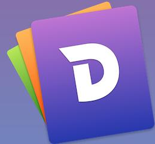
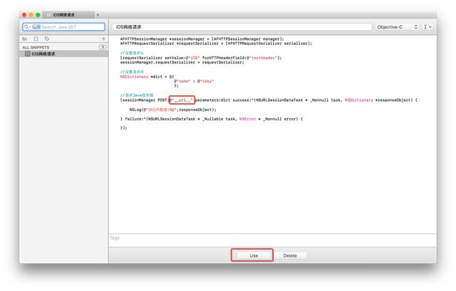
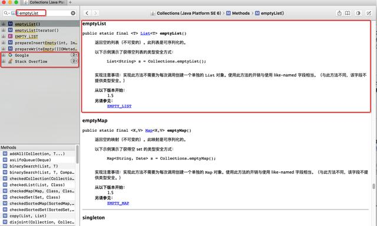
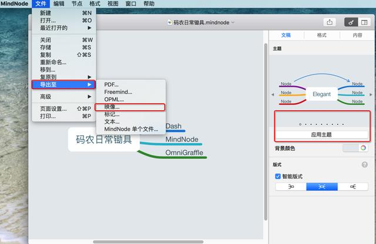
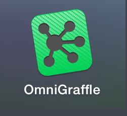
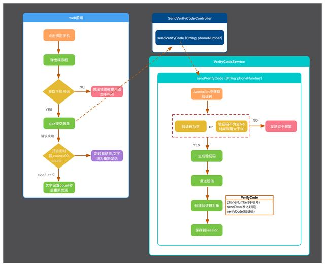
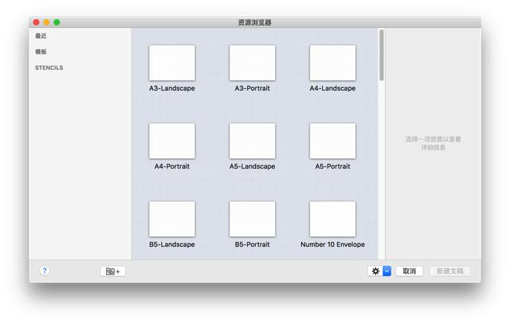
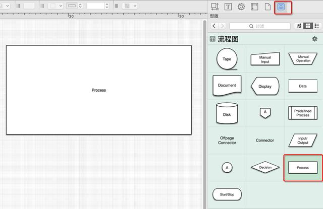
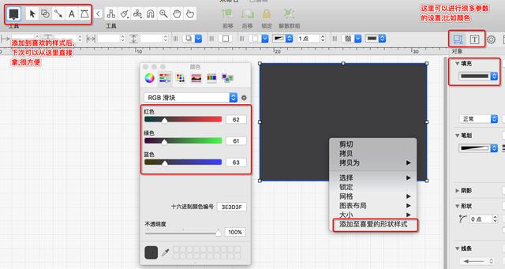
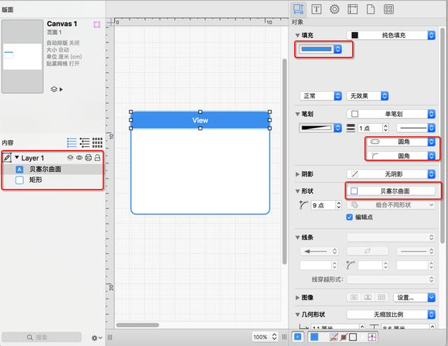

长期分享原创java文章,分享进阶架构师学习笔记及学习资料.适合2-5年经验的开发者阅读,如遇阅读不适,可先收藏并关注,头条大屌们。
--------------------割了产品经理祭天----------------------
整天看技术文，相信大家也累了，今天换一拨内容。eclispe，idea等基础工具我就不推了，推些更好玩的给大家参考，如有好的神器大家也可以留言一波
常用工具清单
重点介绍我认为比较重要的三个工具(这三款是Mac上的,也可以对应找Windows),一个是文档工具,另外两个是我平时绘图相关的工具

都说文档在手,天下我有.这个工具对于我这种喜欢前后端折腾的人来说是非常有用的,因为很多时候,我往往只记住思路,但是具体代码记不住,这个工具有很好的保存代码块功能。另外还可以通过占位符,在点击use时替换掉占位符的内容

其次,这个工具还有另一个很有用的功能.比如我们有这么个场景,我们查JavaSE文档的时候是不是经常遇到这么个问题,就是我们想查某个方法,但是却要知道它在哪个类才能查,而不能根据这个方法直接去查.但是现实中,我们之所以要查往往是不记得类名,所以这个体验就不是很好,而这个工具很好的解决了这个问题.如图

如果有用过其他文档工具的同学就会发现,其他的工具是不会有这个直接根据方法就能搜索的功能的,都是必须要找到关键类才能搜索.而且还提供了Google 和stackoverflow,非常贴心.该工具提供了海量文档,不过都是英文的,当然比较常用的比如JavaSE、Jquery、PHP这些是有中文的,搜一下就出来,搞不掂再留言
这是一款比较美观的思维导图软件,我们平时用得比较多的还有XMind，虽然XMind在Windows,Mac都有,但是就是颜值不高,MindNode有多种主题切换,比较好看（颜值即正义）


直接先上图,比如这个发送验证码的业务思维图,如果能把这个图画出来,那些把代码写出了应该是比较轻松的事

下面就来说下,怎么画这个图
1.打开软件

随意选择一个都是OK的,比如选择第一个
2.绘图
2.1 选中方块

2.2 黑色背景设置
配色这个你可以根据自己的喜好来,比如我这里用的是RGB(62,61,63)

设置好颜色之后,你可以把他添加到喜爱的
2.3 组合图形

从图中就可以看出,其实这些方块都是一些组合图形.配色这些可以自己任意调,当然,OmniGraffle本身也提供了很多好看的配色方案,可以自己尝试
3.注意事项OmniGraffle中提供了大量的绘图原型,可以自己摸索,组合,配色出好看的方案.然后就是各种拖拽.但是要注意的是,黑色的背景要放在图层的最下面,图层区域就是图中Layer区域,这个你用着用着自然明白,遇到坑再留言
Postman 是一款Chrome插件,调试restful api的神器,比较喜欢的是他的书签功能.
jsonView 是一款Chrome插件,请求json时,能将返回的json数据格式化,非常方便,强烈推荐
这么说吧,Lucene很简单，其实就是个框架，用于全文检索用的
--------------------割了产品经理祭天----------------------
闷骚的大屌们,都看到这里了,求关注,求关注